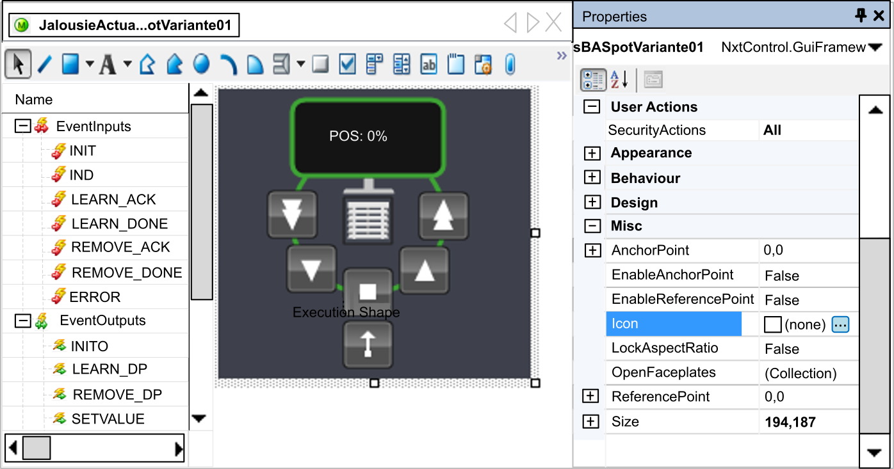
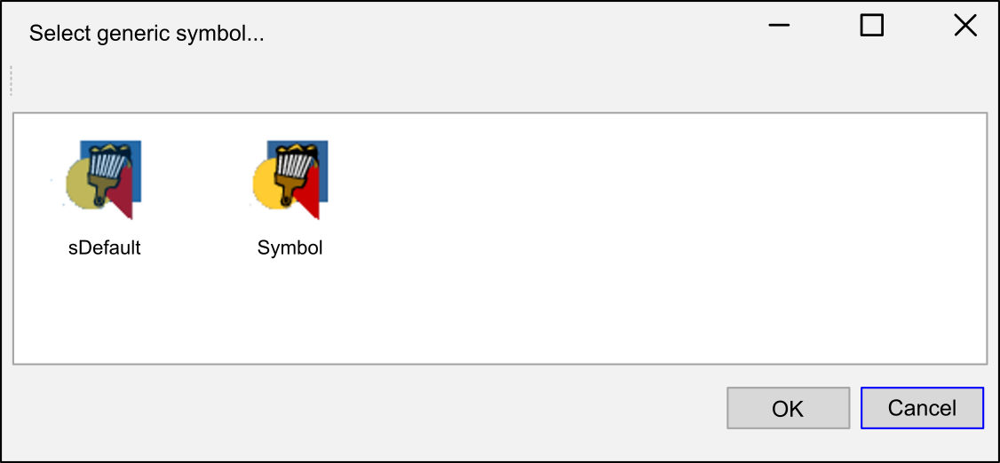

Each CAT may contain several symbols, offering different views depending on usage or optical requirements of the user. Therefore the image, representing the symbol in the dialog Select Generic Symbol later on, can be defined within the properties of the Symbol Editor. In order to do so, select the background of the symbol and click on the ellipsis button (...) in field . A Windows explorer window opens. Browse to the image file you want to use. Any image format (jpg, png, bmp, etc.) can be used. In that way you can use a screenshot of the actual symbol, just as it looks like when the drawing of the entire HMI symbol in the Symbol Editor is completed.

You can save the screenshots to the image folder of the project at first. This is described on page Distributed PAC Project Context menu at item Image storage and on page Image Storage. In order to use images stored in that way, browse to the path where you have stored the project and open ../HMI/ImageStorage and select the proper image. Of course, you can also use any image stored anywhere on your computer. As soon as the symbols are equipped with respective images the available symbols are displayed accordingly in dialog Select Generic Symbol.
In that way, the default symbol icon is being replaced and even several symbols, with rather slight differences in design, can be indicated at first sight:
